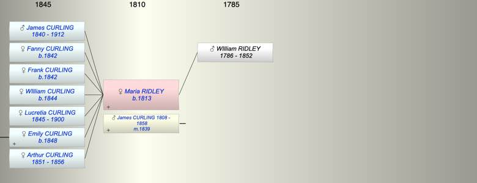
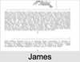

| [Index] |
| Maria RIDLEY (1813 - ) |
|  |
|  |
| b. 03 Feb 1813 at Hartford End |
| m. 17 Dec 1839 James CURLING (1808 - 1858) at Felstead |
| Parents: |
| WIlliam RIDLEY (1786 - 1852) |
| Siblings (3): |
| Catherine RIDLEY |
| John RIDLEY |
| Thomas Dixom RIDLEY |
| Grandchildren (1): |
| Joseph DALTON |
| Events in Maria RIDLEY (1813 - )'s life | |||||
| Date | Age | Event | Place | Notes | Src |
| 03 Feb 1813 | Maria RIDLEY was born | Hartford End | Note 1 | ||
| 17 Dec 1839 | 26 | Married James CURLING (aged 31) | Felstead | ||
| 1840 | 27 | Birth of son James Davenport CURLING | |||
| 1842 | 29 | Birth of daughter Fanny Maria CURLING | |||
| 1842 | 29 | Birth of daughter Frank M CURLING | |||
| 1844 | 31 | Birth of daughter WIlliam CURLING | |||
| 1845 | 32 | Birth of daughter Lucretia CURLING | Reg City of London | ||
| 1848 | 35 | Birth of daughter Emily Sarah CURLING | Note 2 | ||
| 1851 | 38 | Birth of daughter Arthur Dixon CURLING | |||
| 03 Jun 1852 | 39 | Death of father WIlliam RIDLEY (aged 66) | Chelmsford | see picture | |
| 1856 | 43 | Death of daughter Arthur Dixon CURLING (aged 5) | Ipswich | ||
| 18 Mar 1858 | 45 | Death of husband James CURLING (aged 49) | Ipswich | Note 3 | |
| 06 Apr 1900 | 87 | Death of daughter Lucretia CURLING (aged 55) | Ipswich | Note 4 | |
| 13 Nov 1912 | 99 | Death of son James Davenport CURLING (aged 72) | Brighton | Note 5 | |
| Personal Notes: |
| 1871 Living Ipswich Maria Curling widow 48 b Felstead, James son 20, merchant clerk b London Fanny 19 b London WIlliam 17 b London, Lucreatia 15 b London, Emelia S? 13 b London |
| Created on a Mac™ using iFamily for Mac™ on 8 Oct 2023 |